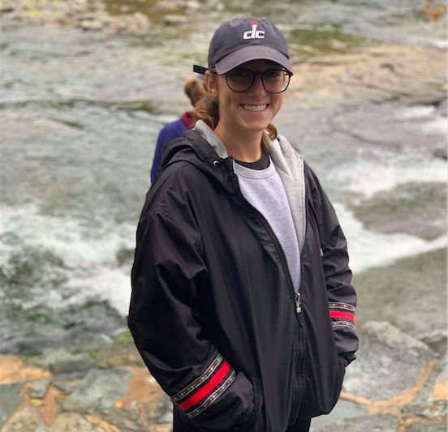

Education:
University of Maryland, College Park
Philip Merrill College of Journalism, Multiplatform Journalism
Expected Date of Graduation: December 2020
Professional Experience:
Freelance Reporter
Stories Beneath The Shell
August 2019 - December 2019
Wrote and report for Stories Beneath The Shell, a student-run newspaper that covers events at the University of Maryland
Freelance Reporter
Greenbelt News Review
August 2019 - December 2019
Wrote and Report for the Greenbelt News Review, an independent newspaper that covers the community in Greenbelt, MD.
Captial News Service Maryland
CNS Maryland
August 2019 - December 2019
Assisted in the production of Maryland Newsline, a nightly broadcast by the University of Maryland.
Employment History:
University of Maryland Eppley Recreation Center
August 2018 - present
Student Employee, Red Cross First Aid/AED Certified Lifeguard
Skills:
- Can operate both film and digital cameras: Proficient in composition techniques
- Adobe Photoshop
- Adobe Premiere
- Microsoft Office Suites
- AP Style
- WordPress
- HTML and CSS
- Git and Github